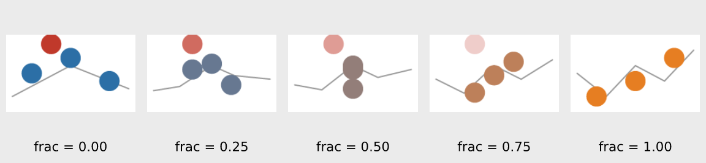

vellum animates by tweening between keyframes: you give it a few finished scenes and a schedule of in-between frames, and it interpolates each frame from the two keyframes around it and encodes the result. It does not run any code between frames, so this is keyframe animation, not a live runtime.
This is the engine level. A grammar layer drives it for you: vellumplot’s
animate() builds the keyframes from your data and the
schedule from an easing curve. Read on if you want to animate your own
scenes, or to know what the engine does with a grammar’s keyframes.
Keyframes
Keyframes are ordinary scenes, all the same pixel size. Here are
three states of a small chart: three keyed points and a line. The point
keyed "d" exists only in the middle keyframe, and the line
has a different number of vertices in each keyframe.
state <- function(x, y, col, line_y, extra = FALSE) {
s <- vl_scene(2, 1.2, dpi = 96, bg = "white") |>
draw(lines_grob(seq(0.05, 0.95, length.out = length(line_y)), line_y,
gp = vl_gpar(col = "grey60", lwd = 2), key = "trend")) |>
draw(points_grob(x, y, size = vl_unit(4, "mm"), key = c("a", "b", "c"),
gp = vl_gpar(fill = col, col = NA)))
if (extra) {
s <- s |> draw(points_grob(0.35, 0.88, size = vl_unit(4, "mm"), key = "d",
gp = vl_gpar(fill = "#c0392b", col = NA)))
}
s
}
keyframes <- list(
state(c(0.2, 0.5, 0.8), c(0.3, 0.3, 0.3), "#2c6fa6", c(0.2, 0.2)),
state(c(0.2, 0.5, 0.8), c(0.5, 0.7, 0.4), "#2c6fa6", c(0.2, 0.6, 0.3), extra = TRUE),
state(c(0.8, 0.5, 0.2), c(0.7, 0.4, 0.2), "#e67e22", c(0.5, 0.2, 0.6, 0.4, 0.8))
)How marks are matched
Marks are matched across keyframes by their data key,
the same keys interactivity uses, not by where they sit in the scene. A
mark keyed "a" in one keyframe tweens into the mark keyed
"a" in the next, wherever that is drawn. So the order of
rows does not matter, and a point that changes group slides and
recolours.
What has no partner enters or leaves:
- a keyed mark with no partner fades in or out;
- unkeyed nodes (axes, gridlines, labels) pair in order with nodes of the same viewport, kind and role. If their number differs between the two keyframes, they switch whole at the midpoint.
A matched line, polygon or path whose vertex count changes morphs: both outlines are put on one common set of vertices along their length, so the morph starts and ends exactly on the keyframes. Colours interpolate perceptually, in the Oklab colour space. Discrete attributes, such as a line type or a label’s string, switch at the midpoint.
vl_tween_pairing() reports how each pair of adjacent
keyframes will tween, before anything is rendered:
vl_tween_pairing(keyframes)
#> from to paired nodes_from nodes_to snapped exited entered
#> 1 1 2 TRUE 2 3 0 0 1
#> 2 2 3 TRUE 3 2 0 1 0Point "d" enters between keyframes 1 and 2 and exits
between 2 and 3. Nothing snaps: the line morphs from 2 to 3 to 5
vertices.
A schedule, and the animation
The schedule says, for each output frame, which pair of keyframes it
lies between (seg, the 1-based index of the left keyframe)
and how far along it is (frac, from 0 to 1). The fraction
is already eased: apply any easing curve you like before passing it
in.
n <- 12
ease <- function(t) t * t * (3 - 2 * t) # smoothstep
seg <- c(rep(1:2, each = n), rep(2, 6)) # two moves, then hold the last keyframe
frac <- c(rep(ease((0:(n - 1)) / n), 2), rep(1, 6))
length(seg)
#> [1] 30Each move runs from fraction 0 up to, but not including, 1, because the next move starts on that keyframe. The six frames at the end hold the last keyframe.
gif <- tempfile(fileext = ".gif")
vl_render_animation(keyframes, seg, frac, gif, fps = 12)
file.size(gif)
#> [1] 47460The frames are rendered and encoded in parallel in the Rust backend.
format can be "gif", "apng",
"svg" (an animated SVG) or "frames" (a
directory of PNG files); vignette("output-formats")
compares them. fps need not be a whole number:
12.5 or 0.5 are kept exactly.
One frame as a still
vl_render_frame() draws the frame
vl_render_animation() would draw for one schedule entry and
writes it as a still image (PNG, SVG or PDF): a poster for the
animation, a thumbnail, or the frame to print. Here are five frames of
the second move, side by side:
fracs <- c(0, 0.25, 0.5, 0.75, 1)
files <- vapply(fracs, function(f) {
vl_render_frame(keyframes, seg = 2, frac = f, tempfile(fileext = ".png"))
}, character(1))
sheet <- vl_scene(6, 1.4, dpi = 96, bg = "grey92")
for (i in seq_along(files)) {
sheet <- sheet |>
draw(raster_grob(files[i], x = (i - 0.5) / 5, y = 0.55,
width = vl_unit(1.1, "in"), height = vl_unit(0.66, "in"))) |>
draw(text_grob(sprintf("frac = %.2f", fracs[i]), x = (i - 0.5) / 5, y = 0.1,
gp = vl_gpar(fontsize = 8)))
}
display(sheet)
The points slide and turn orange, the red point fades out, and the line morphs from three vertices to five.
Easing each property separately
frac drives positions and every discrete switch. Three
optional schedules, frac_col, frac_size and
frac_alpha, drive colour, size and opacity (including the
enter and exit fades) on curves of their own. Here the points move on
the eased curve while their colour changes linearly:
lin <- c(rep((0:(n - 1)) / n, 2), rep(1, 6))
vl_render_animation(keyframes, seg, frac, "a.gif", frac_col = lin)Leaving them NULL uses frac for everything,
and gives exactly the same output as passing frac four
times.
Text that changes every frame
Keyframes fix a label’s text, so a title showing the current year
would only change at keyframes. text_variants and
text_frame swap in a different string on every frame:
text_variants is a list of scenes holding keyed text grobs,
and text_frame says which variant each frame uses. A
frame’s keyed text takes the string and layout of the variant’s text
with the same key, while its position and colour stay as the tween put
them.
years <- 2001:2030
variants <- lapply(years, function(y) {
vl_scene(2, 1.2, dpi = 96) |> draw(text_grob(as.character(y), key = "year"))
})
vl_render_animation(keyframes, seg, frac, "a.gif",
text_variants = variants, text_frame = seq_along(seg))Shape each string with the same font and size as the label it replaces.
Reduced motion
An animated SVG honours prefers-reduced-motion. A reader
who has asked their system not to animate sees one still frame: the last
one when the schedule ends on the final keyframe, so they get the
complete picture, and the first one otherwise. The GIF and APNG formats
cannot do this.
Where to go next
-
?vl_render_animation: the full matching rules and every argument. -
vignette("output-formats"): GIF, APNG and animated SVG compared, with file sizes. - vellumplot’s
animate(): the same engine, driven from a plot.